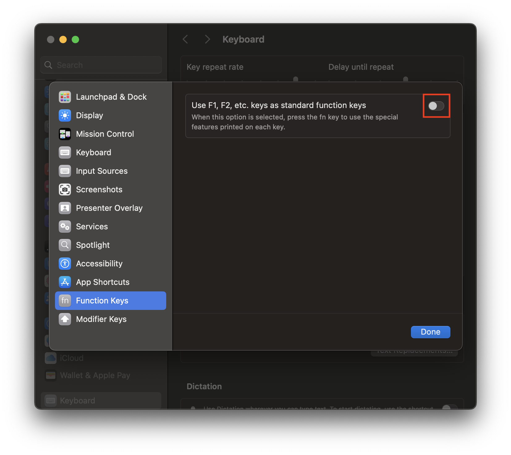

| From | To |
|---|---|
| fn + return | Insert |
This used to be the default mapping on older versions of macOS. When Apple used Intel/AMD chips in their computers, Windows could be successfully installed via Bootcamp. In order to provide full functionality in Windows, the Insert key was mapped using fn + return.
While the MapleStory application is focused, the standard function keys will also work with ⇪ caps lock, ⌘ command, ⌃ control, ⌥ option, or ⇧ shift being held down. Alternatively, press the fn key to use the special features on each key.
| From | To | fn Combination | fn Assignment |
|---|---|---|---|
| F1 | fn + F1 | fn + F1 | Special feature on F1 |
| F2 | fn + F2 | fn + F2 | Special feature on F2 |
| F3 | fn + F3 | fn + F3 | Special feature on F3 |
| F4 | fn + F4 | fn + F4 | Special feature on F4 |
| F5 | fn + F5 | fn + F5 | Special feature on F5 |
| F6 | fn + F6 | fn + F6 | Special feature on F6 |
| F7 | fn + F7 | fn + F7 | Special feature on F7 |
| F8 | fn + F8 | fn + F8 | Special feature on F8 |
| F9 | fn + F9 | fn + F9 | Special feature on F9 |
| F10 | fn + F10 | fn + F10 | Special feature on F10 |
| F11 | fn + F11 | fn + F11 | Special feature on F11 |
| F12 | fn + F12 | fn + F12 | Special feature on F12 |
Be aware of the following System Settings that can interfere with gameplay:
| Setting | Notes |
|---|---|
| Keyboard > Keyboard Shortcuts... > Mission Control | Show Desktop will prevent F11; disable or change shortcut |
| Keyboard > Keyboard Shortcuts... > Keyboard | Shortcuts default to ⌃ control + function keys F1 to F8 |
| Keyboard > Keyboard Shortcuts... > Accessibility | Show Accessibility controls and Turn VoiceOver on or off can affect F5 |
| ⚠️ Keyboard > Keyboard Shortcuts... > Function Keys ⚠️ | THIS MUST BE DISABLED FOR RULE TO FUNCTION PROPERLY (see below) |

| From | To |
|---|---|
| Right ⌥ option | Right CTRL |
This configuration will best match the layout shown on the in-game keyboard settings. For reference, both left and right ⌘ command keys are mapped to the left ALT key by default in MapleStory for macOS.
| Setting | Notes |
|---|---|
| Keyboard > Keyboard Shortcuts... > Mission Control | Mission Control uses ⌃ control + ↑ |
| Keyboard > Keyboard Shortcuts... > Mission Control > Mission Control | Move left/right a space use ⌃ control + ← / → |
| Keyboard > Keyboard Shortcuts... > Input Sources | Key combination ⌘ command + spacebar may interfere |
| Keyboard > Keyboard Shortcuts... > Spotlight | Key combination ⌘ command + spacebar may interfere |